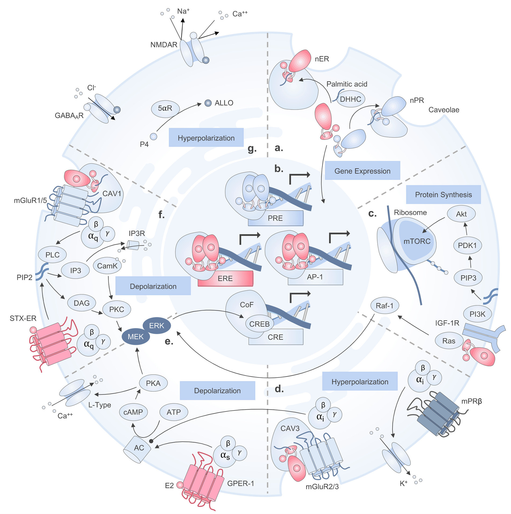
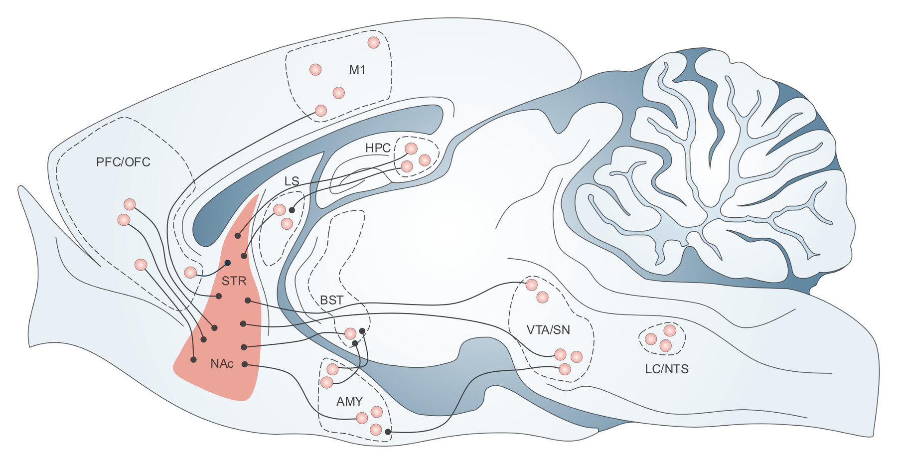
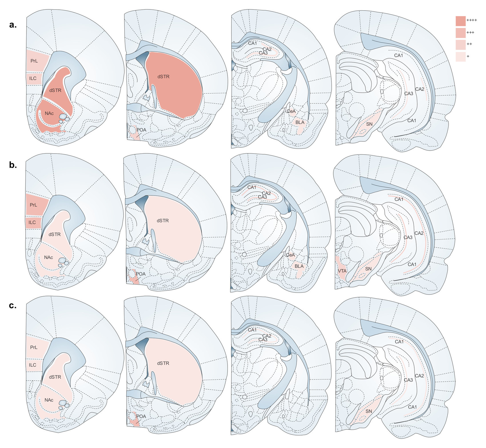
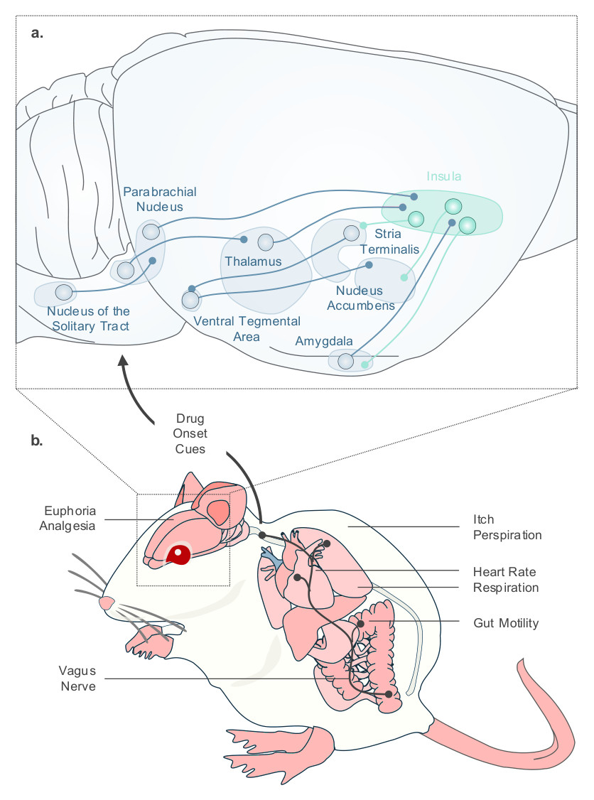
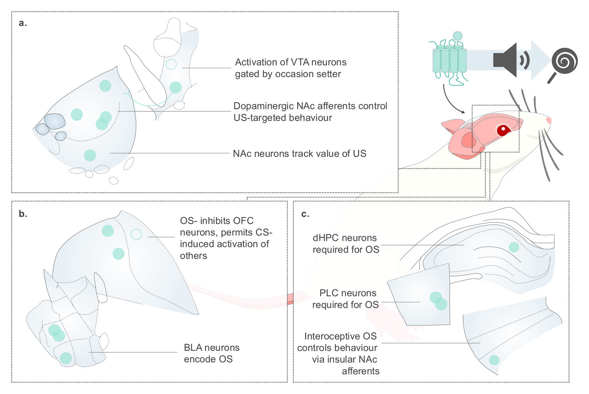
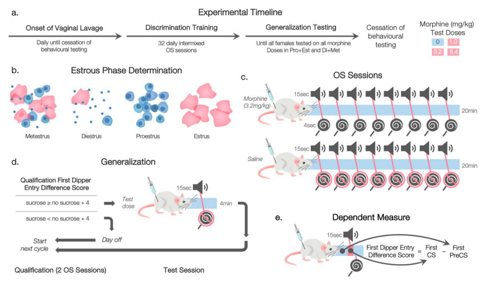

Figures
What the tool is and why you do it yourself. That is the whole intro. Restraint is the game on this page; prose around the figures reads as insecurity about them.
Do not apologise for PowerPoint. If it comes up it is a fact about the tool, not a caveat about the work.
Interoception and addiction · review
Estrogen receptor signalling

What it shows, where it appeared, one concrete construction detail. The sector dividers, the decision to arrange radially, how long the receptor glyphs took — something a reader could not infer from looking.
Relapse circuitry

Where it appeared, and what it shows.
Receptor distribution

Where it appeared, and what it shows. No construction detail needed — only two captions on this page carry one.
Drug onset cues

Where it appeared, and what it shows. No construction detail needed — only two captions on this page carry one.
Occasion setting

Where it appeared, and what it shows. No construction detail needed — only two captions on this page carry one.
Master's thesis
Experimental timeline

Where it appeared, and what it shows.